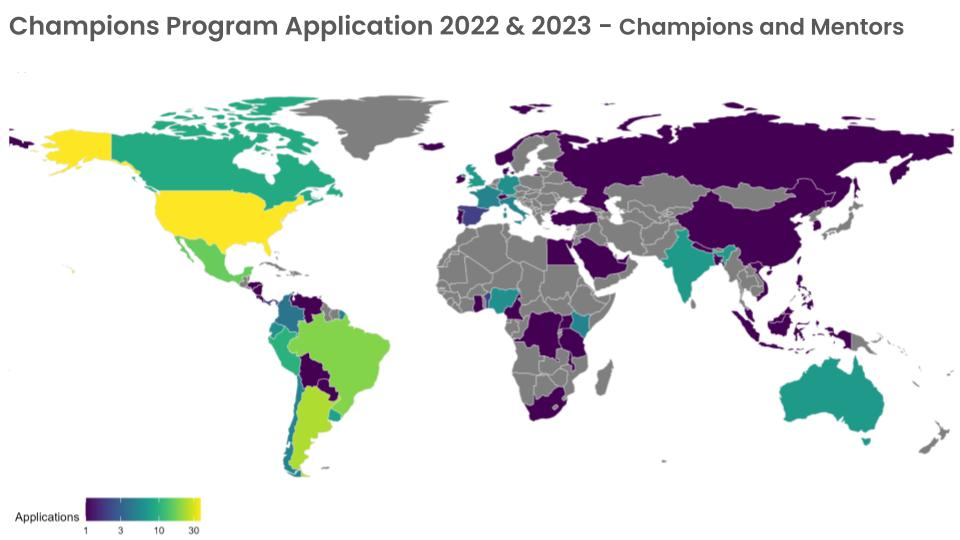

3 Recruitment and selection of champions and mentors
3.1 Overview
The recruitment process for champions and mentors should begin at least four months before the program start date to ensure there is adequate time to promote the opportunity, review applications, and communicate with successful and unsuccessful applicants.
During the first year, we received 74 champion applications and 28 mentor applications. In the second year we received 98 champions applications and 28 mentors applications - so this process can take a significant amount of time!

To ensure a broad range of applications from people across the world, we strive to offer information about the program in different languages. However, at this time, all applications must be written in English.
Below are details about the recruitment process for both champions and mentors including the applications, the communications plan and selection process.
3.2 Applications
The application process for both champions and mentors is intentionally lightweight and consists of an airtable form and accompanying list of questions that applicants can review prior to submission.
Potential champions program applicants are encouraged to attend an optional community call to learn more about the program and the application process. They may also attend an optional coworking session to work on their applications together, and/or book a brief 15-minute meeting with the community manager to get feedback on their applications.
3.2.1 Champions application materials
Champions Airtable application form. (The form is close if we don’t have an open call for applications)
Champions application final questions. These are the questions in the application form. Available in English and Spanish.
After the first year application, we create Frequently Asked Question (FAQs) for Champions. These FAQs improved response time to interested people’s queries.
NoteApplication form template in google doc format for the 2022-23 application call. Preserved for archival reasons. Access only by the rOpenSci Champions Program Team. All information is available with open license and up to date on the Champions Program web site and this playbook.
3.2.2 Mentor application materials
Mentors Airtable application form. (The form is close if we don’t have an open call for applications)
Mentor application final list of questions. These are the question in the application form. Available in English and Spanish.
After the first year we also create Frequently Asked Questions for Mentors
NoteApplication form template in google doc format for the 2022-23 application call. Preserved for archival reasons. Access only by the rOpenSci Champions Program Team. All information is available with open license and up to date on the Champions Program web site and this playbook.
3.2.3 Communications plan
rOpenSci’s standard communication channels are used to spread the news about the champions program. There is a dedicated webpage, and blog post announcing the program and accompanying communications plan to promote the opportunity on social media and various listservs. In addition, the community manager hosts a community call about the program, and posts a recording on the rOpenSci website afterwards. The community manager may also speak at events and meetings hosted by other organizations to ensure the broadest possible reach.
Before beginning, decide which languages the recruitment materials will be translated into and identify translators if necessary. Remember to consider all the materials that will need to be translated (blog posts, video captions, social media posts (mastodon, linkedIn, slack), slides, and emails).
The materials outlined below are saved in this folder: 2. Communications plan.
For internal use by the rOpenSci Champions Program Team. Preserved for archival reasons. All information is available with open licence and up to date on the Champions Program web site and this playbook.
3.2.3.1 Step 1: Update program web pages
Before beginning promotion, review the program webpage text and update as appropriate with new key dates and application materials.
The main Champions program webpage: present the information about:
Program general information like goals, format, and training.
Champions and mentors information including eligibility criteria, benefits of taking part, expectations, timeline for the program, FAQs, and templates.
Application timeline template (example data for 2023-2024 call)
2023-2024 Application timeline
Date Event Jul 14 Call for Champions and Mentor Applications opens 🎉 Jul 25 [OPTIONAL] Community Call - Learn from other Mentors and Champions and get tips for submitting your application Aug 17 & 23 [OPTIONAL] Coworking Champions Application Clinics in different timezones (Aug 17 and Aug 23): receive help with your application to the Champions Program Sep 4 Call for applications closes Training materials.
Events and blog post about the Champions Program.
Champions and Mentors for each cohort.
For the first cohort it is necessary to create the website from scratch and for that it is necessary to develop the program with objectives, measures of success, format, target audience, languages and write and build all the content.
3.2.3.4 Step 4: Host application support activities
The community manager should plan two live sessions to support potential applicants: 1) a community call where applicants can ask specific questions about the application process and 2) a coworking session where applicants can work on the application together in real time.
Application community call: former champions and mentors share their experiences and provide advice on how to apply. They answer questions from attendees.
For the first community call, you can invite people from other champions and ambassador programs to share how these programs benefit participants and their communities.
Co-working hours: rOpenSci has monthly 2-hour co-working and social meetings organized in different time zones each time. We organize this space for people to come and work on their applications, have the chance to review their proposals and to make questions about the program.
Champions Program Application Clinic - 2022-2023.
Champions Program Application Clinic - 2023-2024.
Champions Program Application Clinic - 2023-2024.
3.3 Selection and matching process
For the first cohort the rOpenSci staff team was responsible for selecting both champions and mentors using screening rubrics.
For the second cohort the rOpenSci staff team was responsible for selecting mentors using screening rubric and then rOpenSci Champions Program Team and selected mentors review and select the final group of champions.
Below are details about each step of the selection and matching process, including suggested timelines.
3.3.1 Step 1: Two rOpenSci Team members review application to confirm completion
After the application deadline, the community manager with other team member review champions and mentors applicationsand set aside any candidates that don’t meet the basic criteria.Those application that are not complete or the project is not on the scope of the champions program are remove from the list.
3.3.2 Step 2: Community manager assigns mentors applications to reviewers (1 week)
The community manager can evenly assign applications to each reviewer, taking into account any conflicts of interest. Each application has two reviews.
3.3.3 Step 3: Selection team reviews their assigned mentors applicants (2 weeks)
The reviewers should consider all their assigned applications using the screening rubric and set aside any candidates that don’t meet the basic criteria.
In a slack private direct message group, the team discusses any doubts during the review. The doubts may be related to the rubric, to details in the application, etc
3.3.4 Step 4: Meeting to discuss mentors applicants and final selection
The selection committee should meet to discuss the top applicants. The goal of this meeting is to settle on a final list.
Before the meeting the community manager reviews all the applications with their scoring and prepares the final listfor mentors ordering the applications according to the score they obtained. The CM marks with different colors according to the scoring: definite yes, possible yes, or unsure.
The reviewers initially consider the definite and possible yeses which may be up to twice as many candidates who can be selected. Reviewers should take into account not only the ranking but also the country/region they come from, type of project they want to mentor, languages spoken, and gender.
3.3.5 Step 5: Inform mentors applicants (3 weeks)
Once you have selected the top applicants, prepare individual messages to each person to inform them and request them to confirm their participation by a certain date. If for some reason a successful applicant can no longer participate, you can invite the next best applicant to take their place.
After all selected mentors have confirmed their participation, prepare messages to inform applicants who were no selected.
3.3.6 Step 6: Community manager assigns champions applications to reviewers (1 week)
The community manager can evenly assign applications to each reviewer, taking into account any conflicts of interest. Each application has two reviews.
Mentors for the current cohort are reviewers. Because of the high number of application we also invite mentor from previews cohort to review. We aim to assign between 10 to 20 applications to each reviewer.
3.3.7 Step 7: Selection team reviews their assigned champions applicants (2 weeks)
The reviewers should consider all their assigned applications using the screening rubric.
In a slack private channel, the team discusses any doubts during the review. The doubts may be related to the rubric, to details in the application, etc
The team should take care to write substantive feedback as we attempt to provide each applicant with feedback that may be helpful to them in the future.
3.3.8 Step 8: Consistency Analysis (2 weeks).
A quantitative analysis is conducted to examine the consensus among reviewers. This step ensures that revisions are aligned, promoting fairness and minimizing bias in the selection process.
3.3.9 Step 9: Diversity and Representation Review.
With a focus on diversity and representation, the list of candidates with higher scores is then carefully reviewed to ensure it reflects a broad spectrum of backgrounds and regions. This may involve adding promising candidates to the pool to achieve a truly representative group of potential champions. The program manager create a top candidate list that double the number of spots.
3.3.10 Step 10: Final Selection by Mentors.
The culmination of the process consists of mentors reviewing the top candidates to select their mentees. Mentors tag every candidate with these options:
- 3 projects with “I want to mentor this project.”
- 7 projects “Should be part of the champions.”
- 10 projects “No selected this time.”
Involving mentors in the selection process significantly enhances the mentor-mentee relationship, as mentors’ insights into the selection process ensure a more effective and synergistic pairing. This involvement is crucial for identifying which projects resonate most with mentors, thereby facilitating a more informed and meaningful final match.
3.3.11 Step 11: Final match mentor-mentee.
We also take into account that the champions and mentors are in compatible time zones and speak a common language. Finally, the region and gender of the mentors are variables taken into account in the final selection.
The champion/mentor assignments are created by the CM with input from the team during the meeting, and then the team reviews that final mix. It is discussed asynchronously in the Slack group set up for the review.
Whenever possible, we try to include specific feedback to each applicant, so they can make improvements for next time. We also strive to direct them to other rOpenSci activities or opportunities that may be of interest to them.
- Draft text to applicants: Feedback for champions
3.3.12 First Cohort 2022-2023. Champions and Mentors
| Champion Name | Project type | Mentor Name |
|---|---|---|
| Alican Cagri Gokcek | review a package | Elio Campitelli. |
| Bilikisu Wunmi Olatunji | develop a new package | Christina Maimone |
| Carolina Pradier | package peer-review | Mo (Athanasia Mowinckel) |
| Cesar Luis Aybar Camacho | package peer-review | Marc Choisy |
| Cheryl Isabella Lim | review a package | Mauro Lepore |
| Ghozayel Elotteebi | develop a new package | Zebulun Arendsee |
| Haydee Svab | develop a new package | Beatriz Milz |
| Marcos Miguel Prunello | package peer-review | Lukas Walrick |
| Paola Belén Corrales | package peer-review | Adam Sparks |
| Victor Ordu | package peer-review | Laura DeCicco |
3.3.13 Second Cohort 2023-2024. Champions and Mentors
| Champion Name | Project type | Mentor Name |
|---|---|---|
| Andrea Gomez Vargas | develop a new package | Luis D. Verde Arregoitia |
| Binod Jung Bogati | develop a new package | Erle Holgersen |
| Erika Siregar | develop a new package | Apoorv Anand |
| Ezekiel Adebayo Ogundepo | review a package | Francisco Orlando Cardozo Macias |
| Francesca Belem Lopes Palmeira | develop a new package | Bruna Wundervald |
| Jacqui Levy | develop a new package | Jonathan Keane |
| Liz Hare | review a package | François Michonneau |
| Mirna Vázquez Rosas Landa | package peer-review | Marie Vendettuoli |
| Sehrish Kanwal | package peer-review | Emi Tanaka |
| Yi-Chin (Sunny) Tseng | develop a new package | Eunseop Kim |